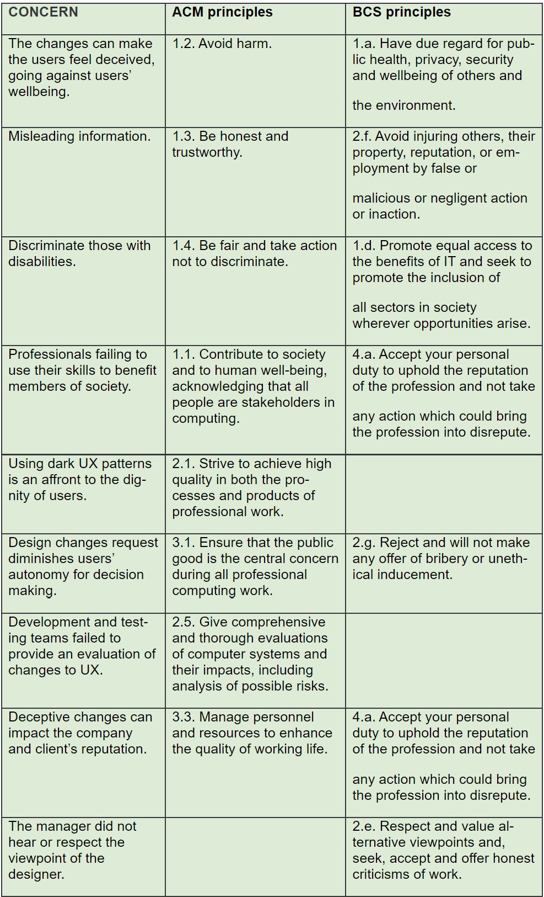

The discussions carried out throughout this week were engaging and formative. We had the opportunity to dissect different points of view on ethics.
Collaborative Discussion 2 - Case Study: Accuracy of information
Initial PostUnderstand how the concepts of validity, generalisability and reliability affect your investigation and the design of your research method.
Consider how to analyse and present the results you obtain from your investigation and how they will enable you to answer your research question.
Research topics
Introduce the concepts of validity, generalisability and reliability and how they impact on your research design.
Consider the differences between qualitative and quantitative data and how to analyse and present your results.
Required Reading
Kaplan, B. & Maxwell, J.A. (2005) Qualitative Research Methods for Evaluating Computer Information Systems. In: Anderson J.G. & Aydin C.E. (Eds) Evaluating the Organizational Impact of Healthcare Information Systems. Health Informatics. New York, NY: Springer.
Backman, R. (2012) Confounding Variables.
Initial Post
The case study I have chosen depicts how economic interests prevailed over ethics. Many user rights have been obscured by tricking them into adhering to services without their knowledge or consent. This technique is known as dark user experience or dark pattern. It involves changing the user interface design to deceive, confuse, hide, or bait users into selection options they did not want or know about (Narayanan et. al, 2020).
The company has violated several principles of the ACM code of conduct. It also violates the Data Protection Act 2018 (Data Protection Act, 2018), which states that data must be used fairly and transparently (Data Protection Act 2018). Additionally, the unfavourable treatment against visually impaired people goes against section 15.1 of the Equality Act (Equality Act 2010, 2010).
The manager and the designer represent a key stakeholder group. It is essential to glimpse how they are unaware of the implications of ethics in their work and how it could impact the company and the customer's reputation.
The ACM code of conduct violations has their equivalents in the BCS code of conduct. In the following table we can see the equivalence between both codes of conduct regarding the concerns found in the case study:
References:
Association for Computing Machinery, 2018. ACM Code of Ethics and Professional Conduct. Available from: https://www.acm.org/code-of-ethics [Accessed 13 March 2022].
BCS The Chartered Institute for IT. 2021 The Code of Conduct. Available from: https://www.bcs.org/media/2211/bcs-code-of-conduct.pdf [Accessed 13 March 2022].
Data Protection Act, 2018. United Kingdom. Available from: https://www.gov.uk/government/collections/data-protection-act-2018 [Accessed 13 March 2022].
Equality Act 2010, 2010. Available from: http://www.legislation.gov.uk/ukpga/2010/15/contents [Accessed 13 March 2022].
Narayanan, A., Mathur, A., Chetty, M. and Kshirsagar, M., 2020. Dark Patterns: Past, Present, and Future: The evolution of tricky user interfaces. Queue, 18(2), pp.67-92.
Peer response #1
Hi Kieron,
Thank you for bringing out this interesting case study for discussion. It is apparent that management and developers were completely unaware of the ACM's Code of ethics, or intentionally violated key principles for their benefit. As you mentioned, it also violates several principles of the BCS code of conduct such as having due regard for the privacy and wellbeing of others (1. a); keeping awareness of standards applicable to the field (1. c); avoiding injuring others by malicious action or inaction (1.f.).
From the point of view of its workers, they are keeping due care with the relevant authority’s requirements (1. a), but they should exercise their professional judgment to fulfil many other requirements of the code of conduct. They are arguably working from a country with different legislation, but they are probably accepting clients that are regulated through the GDPR. It is ultimately the sole responsibility of the controller to ensure personal data is secured (Regulation, G.D.P., 2018). It brings a debate about how to deal with a breach that risks or exposes customer information as a result of the attack.
Ironically, on the other hand, this company is promoting equal access to the benefits of IT (principle 1.d of the BCS Code of Conduct). It could also be argued that it might be a conflict of interest and should have been disclosed to involved parties as stated in the IEEE Code of ethics (I.3).
References:
BCS Code of Conduct. Available from: www.bcs.org/membership/become-a-member/bcs-code-of-conduct/ [Accessed 20 March 2022].
IEEE Code of Ethics. Available from: https://www.ieee.org/about/corporate/governance/p7-8.html [Accessed 20 March 2022].
Regulation, G.D.P., 2018. General data protection regulation (GDPR). Intersoft Consulting, [Accessed 20 March 2022].
Peer response #2
Hi Aiden,
You have chosen a good case study for our discussion, and I share with you the concern about censorship and freedom of information. Your comparison of ACM and BCS principles seem accurate. I would like to comment on how many IT professionals such as software engineers, user experience (UX) designers, artificial intelligence specialists, etc., are unaware of the ethical implications of their work. They might feel something is wrong, but they do not know the existence of codes of ethics and thus, they fail to adhere to its principles. I think this is one of the main advantages of postgraduate studies, which are constantly improving the awareness of IT professionals about ethics and compliance. Do you agree with me on this?
In addition to the principles violated by these actions, we could also mention that these actions fail to comply with the regulations of the Equality Act 2010 (Equality Act 2010, 2010), which forbids direct or indirect discrimination by sexual orientation. Similarly, we could cite the IEEE Code of Ethics principles II.7, II.8 and II.9, where it requires IT professionals to give fair and respectful treatment to all individuals regardless of their sexual orientation and opinions. It also urges not to participate in harassment or discrimination of any kind (IEEE Code of Ethics, 2020).
References:
Equality Act 2010, 2010. Available from: http://www.legislation.gov.uk/ukpga/2010/15/contents [Accessed 13 March 2022].
IEEE Code of Ethics, 2020. Available from: https://www.ieee.org/about/corporate/governance/p7-8.html#top [Accessed 20 March 2022].
Summary Post
During the first units, we had the opportunity to explore and discuss several case studies which demonstrate how different stakeholders can easily violate several principles of the codes of ethics. We can reflect on our role as IT professionals and the impact of our work on society. It is easy to bypass the responsibility of considering ethics in creating content, designing user interfaces, or planning information systems while leaving the burden on management. But as we have seen, we are not only responsible for considering the implications of our work, but also for creating awareness among our team, including managers and other stakeholders (O’Regan, 2018).
There are different regulations and codes of conduct with different approaches, but they have equivalent principles and have the same objective. We had the opportunity to revise several case studies, where we compared the application of ACM and BCS codes of conduct. Hughes et al. (2020) comment that these codes are constantly changing and evolving. This fact implies that we must keep our ethical awareness up to date. In this paper, they also mention the role of other international organizations such as IEEE, IFIP, CIPS, which aim to shape ethics in computing professionals around the globe.
McNamara et al. (2018: 732) states that they “found no evidence that the ACM code of ethics influences ethical decision making”. This statement seems contradictory to our experiences throughout the module. However, it can only remark how many professionals are not trained or unaware of these codes of conduct. Whether we accept a role in a company that violates these principles or neglect them for economic reasons just decreases our quality as professionals and affect the field's reputation.
References:
Callaghan, M., Wood, G., Payan, J.M., Singh, J. and Svensson, G., 2012. Code of ethics quality: an international comparison of corporate staff support and regulation in A ustralia, C anada and the U nited S tates. Business Ethics: A European Review, 21(1), pp.15-30.
Hughes, J., Plaut, E., Wang, F., von Briesen, E., Brown, C., Cross, G., Kumar, V. and Myers, P., 2020, June. Global and local agendas of computing ethics education. In Proceedings of the 2020 ACM Conference on Innovation and Technology in Computer Science Education (pp. 239-245).
McNamara, A., Smith, J. and Murphy-Hill, E., 2018, October. Does ACM’s code of ethics change ethical decision making in software development?. In Proceedings of the 2018 26th ACM joint meeting on european software engineering conference and symposium on the foundations of software engineering (pp. 729-733).
O’Regan, G., 2018. Ethics and Professional Responsibility. In World of Computing (pp. 281-291). Springer, Cham.
Peer review
Deep learning in agriculture: A survey
The purpose of the paper is to compare different deep learning techniques with other frameworks and techniques such as image processing applied to tackle problems and challenges in agriculture. The type of research design used in this paper by Kamilaris and Prenafeta-Boldú (2018) is exploratory because there is no specific problem. Instead, the authors use a survey to compare different techniques and framework to go beyond other studies that only surveyed a few documents or papers.
Regarding the research method, the author uses a quantitative research, where basically other papers or case studies are being surveyed to gather information and data from them. The questions they try to answer are:
What particular agricultural problem the paper address.
What Deep Learning models and architectures have been implemented.
What Data processing tools were used.
What was the overall performance achieved according to the metrics.
Kamilaris and Prenafeta-Boldú support their conclusion with enough evidence, comparing around 40 different papers. They however, miss some other agriculture areas where there is no evidence of previous work using deep learning techniques, so they leave them for further investigation.
References:
Kamilaris, A. and Prenafeta-Boldú, F.X., 2018. Deep learning in agriculture: A survey. Computers and electronics in agriculture, 147, pp.70-90.
Content
Importance of research project
According to Dawson (2015), it is important to organize a research project from the beginning. The author recommends classifying the project according to its type and put effort in crucial points such as originality, area of contribution, or knowledge and understanding. Dawson also recommends to clearly explain the project justification, include critical debate and its findings.
Choosing a project
It is important to consider several aspects such as the time available to complete the project. The complexity must be adequate for its duration. The research topic must be appealing so that the researcher keeps interest during the project.
Project types
Research-based: focuses on an area, identifying weaknesses and strengths, gaps, improvement opportunities, etc.
Development: software, apps, hardware, methods, processes, designs, multimedia, etc.
Evaluation: compare different concepts, methodologies, issues, etc. It can use case studies. It can use several approaches to address a specific problem and compare them (such as comparing different SEPM methodologies.
Industry: it is developed for a specific client. The main drawback is that the customer could drive the project out of the boundaries or requirements of academic work.
Problem solving: use an existing theory or method to solve a new problem, or come up with a new solution/approach to an existing method to solve a problem.
Originality
Techniques: new methods or methods used in way they have not been used before. They do not have to be successful, but research could show why they are suitable or why they are not.
Exploring the unknown: fields not researched before.
Unanticipated: explore on fields already investigated but with new perspective or interpretations.
Data: interpret data in a different way than before.
Knowledge and understanding
Data: raw data (numbers or text) gathered for processing, also known as intelligence gathering.
Information: processed or summarized data will give meaningful information.
Knowledge: is the process of understanding the information and converting it into ideas. It is the application of methodologies, patterns, models, etc., to explain the information and respond to the ‘why’ of the information.
Wisdom: apply all the knowledge and experience to transform it into new knowledge or differentiate it from other knowledge and ideas.
Theory: is the final representation of the observations of the research. It does not mean it is true, but it is the conclusion after information is processed, converted to knowledge and explained as wisdom.
How to perform research
Sequential: there are several models that suggest a series of steps to perform sequentially or in cycles. They normally start by selecting the field, then the focus of study, then the way to make the research and finally the theory. Models differ in how many steps take place.
Generalized: it is like the sequential process, but steps can be skipped or changed. There are alternative routes to the initial steps.
Circulatory: iterative process
Evolutionary: is like circulatory but it recognizes that it could change over time.
References:
Dawson, C.W., 2015. Projects in computing and information systems: a student's guide. Pearson Education.
Bott, F., 2014. Professional issues in information technology. BCS, The Chartered Institute.